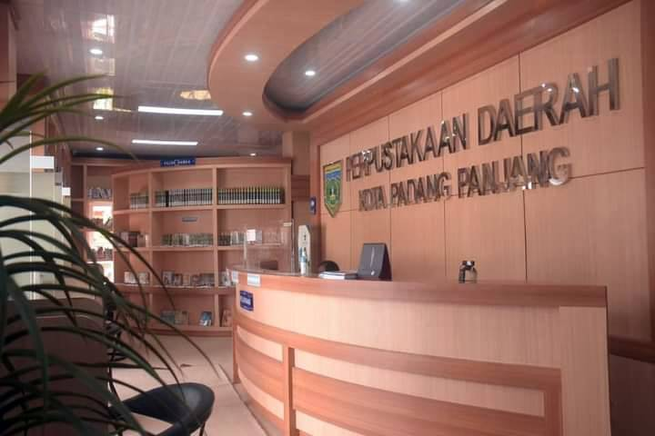

Selamat Datang
Dinas Perpustakaan dan Kearsipan Daerah Kota Padang Panjang merupakan salah satu lembaga pemerintah daerah yang memiliki peran penting dalam menyediakan layanan informasi dan bahan bacaan bagi masyarakat. Dalam perkembangannya, perpustakaan tidak hanya berfungsi sebagai tempat untuk membaca dan meminjam buku, tetapi juga sebagai tempat belajar, mencari informasi, serta mendukung berbagai kegiatan literasi masyarakat.

Tentang Kami
Perpustakaan ini menyediakan berbagai koleksi buku untuk mendukung pendidikan dan pengetahuan masyarakat. Selain menyelenggarakan layanan perpustakaan, lembaga ini juga memiliki tanggung jawab dalam bidang kearsipan. Pengelolaan dan pelestarian arsip dilakukan untuk menjaga dokumen dan informasi penting yang memiliki nilai sejarah serta mendukung penyelenggaraan pemerintahan daerah. Dengan adanya layanan perpustakaan dan kearsipan tersebut, Dinas Perpustakaan dan Kearsipan Daerah Kota Padang Panjang terus berupaya memberikan manfaat bagi masyarakat.
Jam Layanan
- Senin - Kamis: 08.00 - 16.00
- Jumat: 08.00 - 16.30
- Sabtu-Minggu: 09.00 - 16.00
Kunjungi Situs Resmi Website Pemerintah Kota Padang Panjang untuk mencari informasi lebih lanjut.
Kontak
Email: kpad.padangpanjang@gmail.com